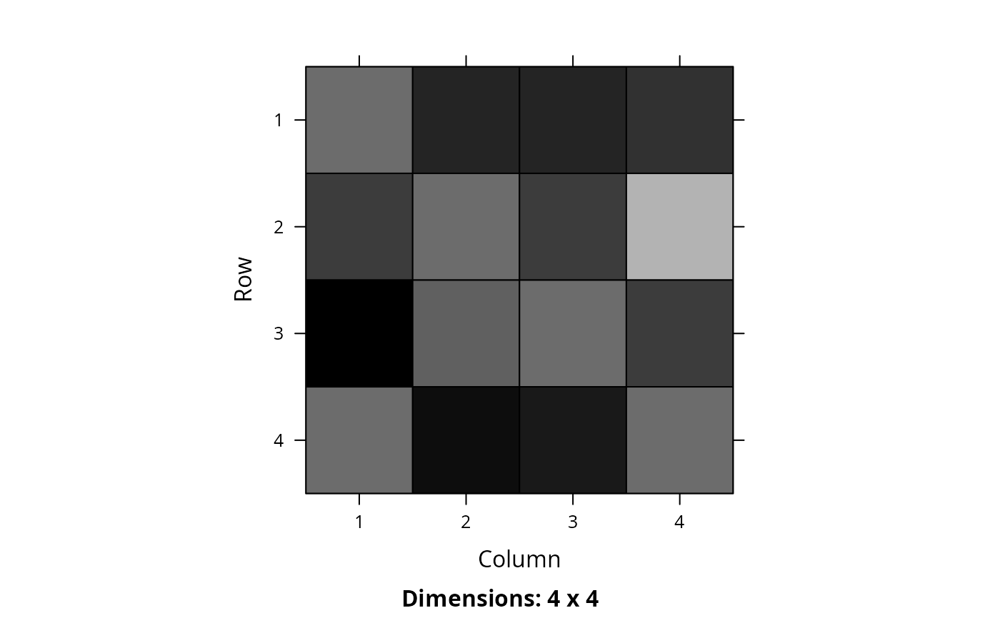

Convert Marxan connectivity data to matrix format
Source:R/marxan_connectivity_data_to_matrix.R
marxan_connectivity_data_to_matrix.RdConvert a data.frame object containing Marxan connectivity data
to matrix format. This function is designed specifically for
connectivity data (not boundary data).
It ensures that the output matrix correctly specifies
symmetric or asymmetric connectivity relationships between planning units.
Arguments
- x
problem()object that contains planning unit and zone data to ensure that the argument todatais converted correctly. This argument can be set toNULLif checks are not required (not recommended).- data
data.frameobject with the columns"id1","id2", and"boundary".- symmetric
logicaldoes the connectivity data describe symmetric relationships between planning units? If the data contain asymmetric connectivity data, this parameter should be set toFALSE. Defaults toTRUE.
Value
A Matrix::dgCMatrix sparse matrix object.
Examples
# \dontrun{
# set seed for reproducibility
set.seed(500)
# create marxan connectivity data with four planning units and one zone,
# and symmetric connectivity values
bldf1 <- expand.grid(id1 = seq_len(4), id2 = seq_len(4))
bldf1$boundary <- 1
bldf1$boundary[bldf1$id1 == bldf1$id2] <- 0.5
# print data
print(bldf1)
#> id1 id2 boundary
#> 1 1 1 0.5
#> 2 2 1 1.0
#> 3 3 1 1.0
#> 4 4 1 1.0
#> 5 1 2 1.0
#> 6 2 2 0.5
#> 7 3 2 1.0
#> 8 4 2 1.0
#> 9 1 3 1.0
#> 10 2 3 1.0
#> 11 3 3 0.5
#> 12 4 3 1.0
#> 13 1 4 1.0
#> 14 2 4 1.0
#> 15 3 4 1.0
#> 16 4 4 0.5
# convert to matrix
m1 <- marxan_connectivity_data_to_matrix(NULL, bldf1)
# print matrix
print(m1)
#> 4 x 4 sparse Matrix of class "dsCMatrix"
#>
#> [1,] 0.5 1.0 1.0 1.0
#> [2,] 1.0 0.5 1.0 1.0
#> [3,] 1.0 1.0 0.5 1.0
#> [4,] 1.0 1.0 1.0 0.5
# visualize matrix
Matrix::image(m1)
# create marxan connectivity data with four planning units and one zone,
# and asymmetric connectivity values
bldf2 <- expand.grid(id1 = seq_len(4), id2 = seq_len(4))
bldf2$boundary <- runif(nrow(bldf2))
bldf2$boundary[bldf1$id1 == bldf1$id2] <- 0.5
# print data
print(bldf2)
#> id1 id2 boundary
#> 1 1 1 0.5000000
#> 2 2 1 0.7250118
#> 3 3 1 0.9753142
#> 4 4 1 0.4676038
#> 5 1 2 0.8122781
#> 6 2 2 0.5000000
#> 7 3 2 0.5121819
#> 8 4 2 0.9254660
#> 9 1 3 0.8288314
#> 10 2 3 0.7115770
#> 11 3 3 0.5000000
#> 12 4 3 0.8928427
#> 13 1 4 0.7647062
#> 14 2 4 0.1643470
#> 15 3 4 0.7320744
#> 16 4 4 0.5000000
# convert to matrix
m2 <- marxan_connectivity_data_to_matrix(NULL, bldf2, symmetric = FALSE)
# print matrix
print(m2)
#> 4 x 4 sparse Matrix of class "dgCMatrix"
#>
#> [1,] 0.5000000 0.8122781 0.8288314 0.7647062
#> [2,] 0.7250118 0.5000000 0.7115770 0.1643470
#> [3,] 0.9753142 0.5121819 0.5000000 0.7320744
#> [4,] 0.4676038 0.9254660 0.8928427 0.5000000
# visualize matrix
Matrix::image(m2)

# create marxan connectivity with three planning units and two zones,
# and asymmetric connectivity values
bldf3 <- expand.grid(
id1 = seq_len(3), id2 = seq_len(3),
zone1 = c("z1", "z2"),
zone2 = c("z1", "z2")
)
bldf3$boundary <- runif(nrow(bldf3))
bldf3$boundary[bldf3$id1 == bldf3$id2] <- 0
# print data
print(bldf3)
#> id1 id2 zone1 zone2 boundary
#> 1 1 1 z1 z1 0.00000000
#> 2 2 1 z1 z1 0.61781378
#> 3 3 1 z1 z1 0.60828433
#> 4 1 2 z1 z1 0.25341769
#> 5 2 2 z1 z1 0.00000000
#> 6 3 2 z1 z1 0.80931806
#> 7 1 3 z1 z1 0.03743085
#> 8 2 3 z1 z1 0.53987623
#> 9 3 3 z1 z1 0.00000000
#> 10 1 1 z2 z1 0.00000000
#> 11 2 1 z2 z1 0.69446482
#> 12 3 1 z2 z1 0.89460806
#> 13 1 2 z2 z1 0.03980585
#> 14 2 2 z2 z1 0.00000000
#> 15 3 2 z2 z1 0.06746978
#> 16 1 3 z2 z1 0.03857482
#> 17 2 3 z2 z1 0.61759676
#> 18 3 3 z2 z1 0.00000000
#> 19 1 1 z1 z2 0.00000000
#> 20 2 1 z1 z2 0.84278088
#> 21 3 1 z1 z2 0.82539628
#> 22 1 2 z1 z2 0.04088770
#> 23 2 2 z1 z2 0.00000000
#> 24 3 2 z1 z2 0.04601484
#> 25 1 3 z1 z2 0.19467348
#> 26 2 3 z1 z2 0.42153320
#> 27 3 3 z1 z2 0.00000000
#> 28 1 1 z2 z2 0.00000000
#> 29 2 1 z2 z2 0.85434472
#> 30 3 1 z2 z2 0.58924564
#> 31 1 2 z2 z2 0.57586891
#> 32 2 2 z2 z2 0.00000000
#> 33 3 2 z2 z2 0.23870311
#> 34 1 3 z2 z2 0.23721283
#> 35 2 3 z2 z2 0.23125087
#> 36 3 3 z2 z2 0.00000000
# convert to array
m3 <- marxan_connectivity_data_to_matrix(NULL, bldf3, symmetric = FALSE)
# print array
print(m3)
#> , , 1, 1
#>
#> [,1] [,2] [,3]
#> [1,] 0.0000000 0.2534177 0.03743085
#> [2,] 0.6178138 0.0000000 0.53987623
#> [3,] 0.6082843 0.8093181 0.00000000
#>
#> , , 2, 1
#>
#> [,1] [,2] [,3]
#> [1,] 0.0000000 0.03980585 0.03857482
#> [2,] 0.6944648 0.00000000 0.61759676
#> [3,] 0.8946081 0.06746978 0.00000000
#>
#> , , 1, 2
#>
#> [,1] [,2] [,3]
#> [1,] 0.0000000 0.04088770 0.1946735
#> [2,] 0.8427809 0.00000000 0.4215332
#> [3,] 0.8253963 0.04601484 0.0000000
#>
#> , , 2, 2
#>
#> [,1] [,2] [,3]
#> [1,] 0.0000000 0.5758689 0.2372128
#> [2,] 0.8543447 0.0000000 0.2312509
#> [3,] 0.5892456 0.2387031 0.0000000
#>
# }